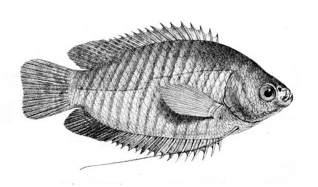

खोसटीBanded Gourami
Trichogaster fasciata · Osphronemidae · FSH-0021

- Scientific name
- Trichogaster fasciata (Bloch & Schneider, 1801)
- Family
- Osphronemidae
- Hindi
- खोसटी
- Local names
- khosti, khosty, khalisa, kholisha, striped gourami
- Status here
- native
- Movement
- Resident, here all year
- IUCN
- LC
- Review
- audited and independently read
When to look कब देखें
Present all year.
Uses and possibilities उपयोग और संभावनाएँ
Drawn from the documented uses in the profile below, where each is labelled traditional, current or a research lead. All uses →
Tell it apart from इनसे अलग पहचानें
खोसटी / Banded Gourami
Trichogaster fasciata (Bloch & Schneider, 1801) — Osphronemidae
खोसटी — पूर्वी मैदानों की हवा साँस लेने वाली मछली, जो बिना ऑक्सीजन के तालाब में भी जीती है। नीले और लाल रंग की धारियोंवाली, और अपने लंबे नीचे के पंख से खोज-खोज कर जमीन की जलजीवों को निकाल कर खाती है। नर की पूँछ चमकीली लाल होती है और बरसात में तालाब के किनारे फूल और घास से घोंसला बनाता है, जिसमें मछलियों को अंडे देने के लिए आमंत्रित करता है।
Quick Identification त्वरित पहचान
| Feature | Description |
|---|---|
| Size | 8–15 cm, occasionally 17 cm |
| Shape | Compressed laterally, oval, with a blunt head |
| Colour | Silvery-green to olive-brown with dark blue and red transverse stripes; paler below |
| Stripes | 4–5 dark vertical stripes alternating with lighter stripes |
| Fins | Dorsal and anal fins long, with distinct patterns; pectoral fins elongate; ventral fins very long |
| Tail | Rounded; males' tail reddish in breeding season |
| Behaviour | Uses long ventral fins to search bottom; build floating bubble nests |
Field tip: A laterally compressed, striped fish in slow water or weeds with very long thread-like ventral fins used for feeling the bottom. The colour is blue-green with red, and the stripes are distinct. Males in breeding season have red in the fins and tail. A fish building a bubble nest in shallow water is certainly a male.
हिंदी — कैसे पहचानें: नीचे की धीमी मछली, चाँदी-जैतूनी, नीली और लाल धारियों वाली। पेट के पंख बहुत लंबे, धागे जैसे, जिनसे तली को महसूस करती है। नर की पूँछ प्रजनन में लाल।
Morphology आकारिकी
Biometrics (Indian plains populations):
| Measurement | Range |
|---|---|
| Standard length | 8–15 cm |
| Body depth | 30–40% of standard length |
| Dorsal fin | 13–17 soft rays |
| Anal fin | 11–15 soft rays |
| Ventral fin rays | 1 spine + 5 soft rays (thread-like) |
| Eggs per female | 1,000–3,000 |
Head and labyrinth organ: The head is blunt. A chamber above the gills lines with blood-rich plates through which the fish absorbs oxygen from gulped air; called the labyrinth organ, it allows the fish to breathe air and survive in stagnant water.
Body: The body is compressed laterally and oval. The lateral line is complete. Scales are small.
Fins and stripes: The dorsal fin is long and soft-rayed, positioned above the anal fin. The anal fin is equally long. The ventral (pelvic) fins are extremely elongate, thread-like, used as sensory organs to probe the bottom. The tail fin is rounded. Dark transverse stripes run from the dorsal fin to the anal fin, with lighter stripes between; stripes are most prominent in breeding males.
हिंदी: सिर भोथरा। गलफड़ों के ऊपर एक भूल-भुलैया अंग जिससे यह हवा साँस लेती है और गंदे पानी में भी जीती है। शरीर किनारों पर सपाट। पेट के पंख लंबे धागे, तली को अनुभव करते हैं। पीठ और पेट के पंख लंबे, समान लंबाई के।
Behaviour & Ecology व्यवहार और पारिस्थितिकी
A hunter of the bottom and margins of quiet water. It moves slowly, feeling the mud and detritus with its elongate ventral fins, searching for small invertebrates, insect larvae and tiny molluscs. The labyrinth organ allows it to survive in water with almost no dissolved oxygen. In the monsoon, males move to shallow water with weeds and floating vegetation and build floating bubble nests—spheres of air-filled bubbles blown from the mouth and glued together with mucus. When a female passes, the male dances and leads her into the nest where she spawns; he drives her away after and guards the nest, keeping the bubbles intact by blowing new ones and repairing damage, until the eggs hatch.
Herons hunt it in the shallows; catfish and snakeheads take the larger fish.
हिंदी: धीमे पानी की तली की शिकारी। नीचे को अनुभव करती हुई छोटे कीड़े, लार्वे और घोंघे खाती है। ख़राब पानी सहती है। बरसात में नर घास में बुलबुलों का घोंसला बनाता है, मादा को आमंत्रित करता है, और अंडे निकलने तक अहाता करता है।
Life Cycle / Phenology जीवन चक्र
| Stage / season | Event |
|---|---|
| March–May | Maturity; concentration in deeper water as it cools |
| June–August | Migration to flooded paddies and shallow wetlands; bubble nesting in weeds; spawning every few days |
| Eggs, 2–3 days | Adhesive, floating in the bubble nest; male guards |
| Larvae, 3–4 days | Absorption of yolk sac; remain in nest |
| Fry, 4–7 days | Released from nest by male; feed on minute organisms |
| 2–3 months | Growth to 3–4 cm; schooling begins |
| 4–5 months | Sexual maturity at 4–5 cm |
| September–October | Peak abundance of young in shallow water |
| November–May | Retreat to deeper refuges; growth slows in cool water |
हिंदी: बरसात में प्रजनन; बुलबुलों का घोंसला; अंडे दो-तीन दिन; लार्वे तीन-चार दिन; नर की देखभाल; नौ-बारह हफ़्ते में बड़े हो जाते हैं।
Host Plants or Prey आहार
- Small aquatic insect larvae: midge larvae (Chironomidae), small mosquito larvae, small dragonfly nymphs.
- Tiny crustaceans: Water Flea, small copepoda.
- Molluscs: small snail eggs and juveniles.
- Algae and plant detritus when insect prey is scarce.
Predators / Natural Enemies शत्रु
- Birds: Indian Pond Heron, Little Egret, White-throated Kingfisher, Pied Kingfisher.
- Fish: Stinging Catfish, Great Snakehead, Mozambique Tilapia.
- Others: aquatic insects, dragonfly nymphs on fry.
Agricultural / Human Relevance कृषि प्रासंगिकता
Food. Abundant, easy to catch, and good eating. Sold fresh in markets and cooked whole or in curries. The flesh is soft and sweet; a valued catch in monsoon when the fish is fattest.
Aquaculture. Sometimes stocked with carp in fish ponds as a supplementary species. Its tolerance of poor water makes it suitable for tanks where higher-value carp cannot thrive.
Traditional and Ethnobotanical Use: none recorded specifically for this species in the region.
Today. Abundant in suitable habitats; a common monsoon catch.
Research direction (a lead, not a result). The nesting and parental care behaviour in the wild is poorly documented for the region; a record of nesting timing, nest size, clutch size and hatch success would contribute to understanding environmental factors that influence reproduction.
हिंदी: खाने में अच्छी, नरम मांस, मीठी। बरसात में फटी-फट पकड़ी जाती है। कार्प के साथ खेती में डाली जाती है। ख़राब पानी सहती है। बुलबुलों का घोंसला बनाते समय पकड़ी जाती है, जो नर की देखभाल का समय है।
Expected Locally स्थानीय रूप से अपेक्षित
Not a field record. Written from published accounts for eastern Uttar Pradesh. No confirmed local sighting yet — if you have seen it, that is what the atlas needs.
अभी तक स्थानीय पुष्टि नहीं। यह विवरण प्रकाशित स्रोतों से है, किसी अवलोकन से नहीं।
To be expected in slow-moving water, marshes and rice paddies through the district, particularly during and after monsoon. A fish building a bubble nest in weeds is a confirmed record of breeding. A photograph or a net catch from suitable habitat is a confirmed record for the species.
Distribution वितरण
Global range: Native to South Asia from India to Myanmar; the range in Bangladesh and eastern India is unclear due to taxonomic confusion.
In India: Throughout the Ganga system and flood plains; particularly common in the north-east.
In Uttar Pradesh: Throughout the northern plains and the Ganga system.
In Basti district / eastern UP: Expected in all slow-moving and still-water habitats; abundant in monsoon.
Research Questions शोध प्रश्न
Anyone can investigate these | कोई भी इन प्रश्नों की जाँच कर सकता है
- In which month do males first start building bubble nests in your area, and in which month do they stop? / आपके इलाके में नर किस महीने से बुलबुलों का घोंसला बनाना शुरू करते हैं और किस महीने बंद करते हैं? — Walk flooded paddies in May, June, July, August, September and note nests.
- How big is a typical bubble nest, and how many bubbles are in it? — Measure a nest and count bubbles.
- How many eggs are in a nest, and how long until they hatch? — Collect a nest carefully and observe in a container.
- Do nests built in dense weeds have better hatch success than those in sparse weeds? — Compare success in two habitat types.
- What is the first food of fry when released from the nest? — Look at stomach contents of very small fry.
Similar Species मिलती-जुलती प्रजातियाँ
| Species | How to tell apart | हिंदी |
|---|---|---|
| Climbing Perch (Anabas testudineus) | Serrated gill cover that spreads; thicker body; no elaborate stripes | गलफड़ा आरीदार, शरीर कड़ा |
| dwarf gourami (Trichogaster lalius) | Smaller (5–7 cm); deeper body; red and blue stripes; weaker labyrinth | छोटी, लाल-नीली |
| Pea pufferfish (Carinotetraodon travancoricus) | Much smaller (2–3 cm); inflatable body; spotted; toxic | बहुत छोटी, फूलती है |
Field rule: A striped lateral-compressed fish with long thread-like ventral fins and a labyrinth organ is a gourami; the banded gourami is distinguished by 4–5 dark stripes and no elaborate colour in females.
Taxonomy & Classification वर्गीकरण
Original description. Described by Bloch and Schneider in 1801 as Sparus fasciatus in Systema Ichthyologiae, p. 266. Later placed in Trichogaster (with hairy tails—a misinterpretation of the ventral fin bristles) when the genus was defined.
Subspecies. Monotypic — no subspecies are currently recognised, although Indian and Southeast Asian populations show morphological variation.
Family and order placement. Osphronemidae, the gourami family, in the order Anabantiformes. The genus Trichogaster contains several species of South and Southeast Asian air-breathing gouramis with elaborate nest-building behaviour.
Phylogenetic notes. Trichogaster and Colisa (dwarf gouramis) are sister genera among the Osphronemidae; the family is monophyletic.
IUCN status rationale. Least Concern. Widespread and abundant in suitable habitats; no range contraction documented.
Photo Gallery फोटो गैलरी
Photos needed आवश्यक फोटो
- [ ] Male at bubble nest (बुलबुलों के घोंसले पर नर)
- [ ] Close-up showing stripes and ventral fins (धारियाँ और लंबे पंख)
- [ ] Breeding pair (प्रजनन जोड़ी)
References संदर्भ
- Bloch, M.E. & Schneider, J.G. (1801). Systema Ichthyologiae, p. 266. Berolini. [original description, as Sparus fasciatus]
- Day, F. (1878). The Fishes of India, vol. 1. Williams and Norgate, London.
- Keenleyside, M.H.A. (1979). Diversity and adaptation in fish behaviour. Springer-Verlag, Berlin.
- Jhingran, A.G. (1991). Fish and Fisheries of India, 3rd ed. Hindustan Publishing Corporation, Delhi.
- Pethiyagoda, R. (1991). Freshwater Fishes of Sri Lanka. Peradeniya University Press. [includes comparative data]
- GBIF Occurrence Data — Trichogaster fasciata, India (2026).
Source file: species/fauna/fish/banded_gourami.md